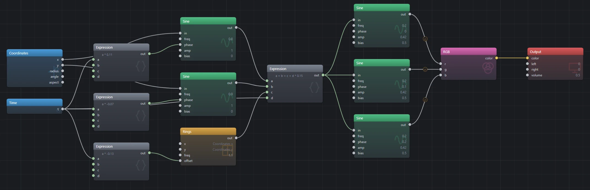

A 303 line with accents and slides, through a four-pole filter into two delays, over a galloping bass. The first minute of a hundred and twenty-eight bars: the intro, a build, and the first drop.
A patchable synthesizer for Windows, macOS and Linux
One patch.
A picture and a sound.
Flyback is a modular synthesizer where the same patch draws on the screen and plays through the speakers. Wire oscillators, patterns, geometry and feedback together, and watch and hear the result change as you turn a knob. Or say what you want: the assistant built into the editor wires it, looks at what it drew, listens to what it plays, and puts it on the canvas as an edit you can undo.
Releases are built for Windows x64, macOS on Apple silicon and Linux x64. MIT licensed.
How it works
Wire it once. The screen draws it and the speakers play it.
Every module has sockets, and a wire carries a signal from one socket to another. Whatever reaches
the Output's color is drawn, and whatever reaches its left and
right is heard. Under the hood the patch becomes one small program, run once for every
pixel of the picture and once for every sample of the sound, so a change to any wire shows and sounds
at the same moment.

# The same patch, as text.
let across = x |> sine(freq: 0.8, phase: t * 0.11)
let down = y |> sine(freq: 0.9, phase: t * -0.07)
let round = rings(freq: 1.1, offset: t * -0.13)
let field = across + down + round + t * 0.15
let r = field |> sine(freq: 0.2, phase: 0, amp: 0.42, bias: 0.5)
let g = field |> sine(freq: 0.2, phase: 0.1, amp: 0.42, bias: 0.5)
let b = field |> sine(freq: 0.2, phase: 0.2, amp: 0.42, bias: 0.5)
color.rgb(r: r, g: g, b: b) |> out.colorPicture and sound share one patch
Wire a signal into the Output's color and you see it. Wire it into left and
you hear it. A slow oscillator can set the hue of the image and the tremolo on the tone at the same time.
Sockets have sensible defaults
Position inputs are already connected to Coordinates and time inputs to Time, so an oscillator starts oscillating as soon as you place it, before you draw a single wire.
Every edit recompiles, live
The preview draws on the GPU where it can, and the sound keeps playing while you patch. A toolbar button swaps the preview and the canvas for a bigger picture. Undo takes back any edit, including a whole patch the assistant built.
Built in
Say what you want. The assistant patches it, then looks and listens.
The assistant lives in a column beside the patch, and it is not a chat box that hands you something to paste. It works the patch the way you do: it adds modules, wires sockets, sets knobs, or writes the whole patch in the text language, and every edit comes back with what the compiler makes of it. It renders a strip of frames to see the motion, not one still. Given a model that can hear, it listens to a few seconds of the sound, with the levels measured beside what it heard, so a patch that compiles but plays nothing does not get past it. It is told what every module does and what every preset is, and can read a preset in full for the idea in it. A short ask, like "make it darker", can be written out first: Expand beside Send turns it into the full request, in the box, saying what keeps the patch itself, what changes and what stays, for you to edit before sending.

An edit, not a paste
When a turn ends, what it built lands on the canvas as one edit, and Ctrl+Z takes the whole thing back. Say now make it slower and it carries on from where it left off. The conversation is saved beside the patch it is about.
Any model, your key or your own sign-in
Any endpoint that speaks chat completions, from OpenAI to a local Ollama, or Google's Gemini, whose models hear the patch themselves. The key stays in the operating system's secret store, and nothing is sent until you press Ask. Or choose Claude Code or Codex, and the plan you are already signed in to pays: no key at all.
Made the same way
Flyback itself is written entirely by agents, with a person directing the work and deciding what ships. The assistant is handed what they were: a compiler that says what is wrong and where, a renderer that needs no window, and a language a patch can be written in.
Setting it up is step eleven of the tutorial.
Gallery
What the presets look like.
Flyback ships with more than forty presets, from single ideas to whole tracks. These clips were
rendered with flyback-cli render, and so are the stills: each is one frame of a preset. Click one
for the whole frame.
What they sound like
The first minute of two presets, rendered to WAV with flyback-cli render and
encoded to MP3. Nothing was added: every note, drum and echo comes out of the patch.
A generative patch with no clock in it: four random voltages read out of noise choose the notes and open the voices, and five wires run backwards, so a drone bends its own phase, an echo darkens every time round, and the voices push each other down. A music box, a far-off call, rain and thunder drift in and out on their own, and each one marks the picture while it stays.
Whole tracks, seen and heard
Four tracks from the Effects plugin, each recorded from the running app for one whole pass. Overworld is a chiptune on a console's four voices, under a side-scroller drawn a pixel at a time.
Mycelium runs ninety-six bars. One sequencer arranges the six sections, the picture is driven by the signals that drive the sound, and one of the voices is the picture being read back as a waveform.
Fracture is drum and bass at a hundred and seventy. The break is synthesized rather than sampled and then chopped anyway, by bending the clock it reads, and the picture is cut into eight strips by the same list that cuts the drums.
Acid is a 303 line with accents and slides, through a four-pole filter into two delays, over a galloping bass, for a hundred and twenty-eight bars of intro, builds and drops.
More tracks go up on the Flyback channel on YouTube.
Features
Everything is a module, and every module is a few sockets.
Right-click the canvas or press Space to add a module where you are pointing. Drag from a socket to wire it, drag a wire off to unplug it, right-drag an unpatched input to turn its value, and group modules into boxes. Ctrl+B switches one off, passing what is patched into it straight through.
Sources, oscillators, patterns, forms, geometry, color, maths, pitch, timing, shaping, time effects, feedback, measurement and routing modules, with a preset for each family.
Read the previous frame back in, or wire a module into itself. A loop is a delay: a filter or a comb for the ears, a trail or a tunnel for the eyes.
Press F2 and the patch is text you can edit, diff and generate. It
builds back to exactly the same program and saves as .fbks.
MIDI input on Windows, macOS and Linux, with chords played down one chain of polyphonic wires. With no controller, the computer keyboard is the instrument. Knobs follow a MIDI controller too, and a Clock In keeps the whole patch to a drum machine's tempo and Start button. Set up an Elektron Syntakt →
Record a live take, knobs and all, with Ctrl+R.
For repeatable exports use flyback-cli render, which draws on the GPU with no window. MP4, WebM, MOV, MP3, M4A and FLAC
where ffmpeg is installed; AVI and WAV are written by Flyback itself and need nothing.
Describe a patch and have one built, looked at and listened to, over any chat-completions endpoint, Gemini, or the Claude Code or Codex you are signed in to. What comes back is an edit you can undo. How it works.
Modules, presets, sound backends and assistants all load from a folder. The Picture, Voice, Effects and Mastering modules ship as plugins themselves. Write your own.
Presets and plugins people make go on the preset site, with a picture and a sound of each. The gallery in the app lists them, and one click downloads and opens one. A plugin is a signed package, installed from the same window.
A look around
Screenshots from the app.
Edit a module on the inspector
Select a module to see its description and a slider for every socket that is not wired. A wired socket names the socket at the other end, patched from Time.t, and its outputs are listed under the sliders with what each feeds. Hover a socket for what it does. Values change the running patch as you drag. A selected group shows the same rows for the sockets on its edge.

Switch to text with F2
The text view prints the patch in the language, in the same colors the canvas uses for each kind of module. Edit it and press Ctrl+Enter to build it back into a patch.

Keep big patches readable with groups
The Whole band preset is a hundred and sixty-two modules in fourteen boxes: a clock, the song, seven instruments, a room, a mixing desk and three for the picture. Double-click a box to look inside, and press Ctrl+G to make your own.

Perform with knobs
Press Ctrl+K for the knob panel under the canvas. A knob moves every socket linked to it, each over its own range, without rebuilding the patch, so it can be turned mid-take and the recording keeps the move. Learn a MIDI controller for one, or bind it by name to a knob on an instrument Flyback knows. The die at the end of the panel, Ctrl+Shift+K or a learned controller button or pad randomizes every knob not held, gliding there, and the arrow beside it goes back. Full screen and the viewer keep the knobs behind the dots at the bottom of the picture.

Start from a preset
The first toolbar button opens a gallery of every preset: a card for each, with a frame of what it draws, or a speaker for one that is only heard, its name, a line on what it shows, and whether it works with sound, picture or both. The cards sit under headings: the blank canvas, then patches about one idea, then the ones where the picture and the sound are one thought, then the showcases. Presets from plugins follow the built-in ones under the same headings. Yours come last, under YOUR PRESETS, where the first card saves the patch on the canvas as one, with the sounds and pictures it uses, and a right-click deletes one. After those, ON THE PRESET SITE lists what people have shared, with their stars; click one to download and open it. One you have opened is kept, so it is listed and opens even while the site is down. The column on the left narrows the gallery: type a name, heading, author or tag, pick a heading, sound or picture, or a topic. Click a card to choose it and the column on the right shows it larger, with its description, author and topics; Use this preset, Enter or a double-click opens it. Rest the pointer on a card to try it: its picture plays on the card and its sound fades in over the patch you have. In a narrow window the filter sits above the cards and the chosen one's name and button below. With an assistant set up, a card at the top takes an idea instead: type it, press Expand to have the assistant write it out as a detailed brief you can edit, and press Start to open an empty patch with the assistant already building from it, the idea written out first if you did not. Settings → Files picks the one Flyback opens on next time.

Get started
Download it, or run it from source.
From a release
Each release has a self-contained folder per
platform, with the app, the command line tool, the viewer and the plugins side by side. There is nothing to install:
unpack it and run Flyback.
Or let the install script fetch the
latest release for your platform, check its signature and put it in place, with the command line tool and the
viewer on your PATH. It runs in a terminal on Linux and macOS and in Git Bash on Windows:
curl -fsSL https://raw.githubusercontent.com/markovcd/Flyback/main/install.sh | bashRun it again to update. bash -s -- --uninstall in place of bash removes Flyback and
everything the script added.
After that it keeps itself up to date: a new release is downloaded in the background and installed the next time Flyback starts, and only if it is signed with Flyback's release key. The window that opens then shows what changed since the version it replaced. Turn it off under Settings → Privacy.
It also counts how it is used, in coarse bands: the version, the operating system, which of its own plugins loaded and which sound backend opened, roughly how big the machine is, how many of each kind of module a playing patch holds, whether an assistant was asked and which, and at the end of a run, which kinds of module were picked, how long it lasted, which of the editor's features it used and how fast the picture drew. A crash sends the kind of error and where it happened, never the message. No patch, nothing typed, and nothing that identifies you or your machine: two runs cannot be told apart from one. Turn it off under Settings → Privacy.
To open .fbk, .fbkb and .fbks files by double-click, pick the editor
or the viewer under Settings → Files; each kind then shows an icon of its own. A .fbkp plugin always opens in the editor,
which shows what the plugin is, adds and reaches, and installs it if you say so. On macOS the build is Flyback.app, which
always receives them and passes them on to the viewer if that is the choice. The command
line tool and the viewer are inside it, in Flyback.app/Contents/MacOS.
The same tab sets a library folder. A sound or a picture a patch names that is not beside the patch is looked for there, and one chosen from it is named from it, so the patch finds it on any machine with the same library.
From source
You need the .NET 10 SDK. A build from source can also target Windows on Arm (win-arm64)
and Intel Macs (osx-x64), which the releases do not include.
git clone https://github.com/markovcd/Flyback
cd Flyback
dotnet run --project src/Flyback.Editor.Desktop -c ReleaseFrom the command line
flyback-cli render nebula.fbk -o nebula.png --size 1920x1080 --at 2.5
flyback-cli render drone.fbk -o drone.mp4 --seconds 30 --fps 30
flyback-cli render --preset "Plasma" -o plasma.png --at 1
flyback-cli check nebula.fbk --strict
flyback-cli compare nebula.fbk nebula-ported.fbk
flyback-cli measure nebula.fbk LFO Mixer.out --seconds 10
flyback-cli print nebula.fbk -o nebula.fbks
flyback-cli print --preset "Whole band"
flyback-cli pack --preset "Mycelium" -o mycelium.fbkb
flyback-cli save --preset "Acid" -o acid.fbk
flyback-cli shot --preset "Flyback Theme" -o theme.png --at 30.3
flyback-cli shot drone.fbks -o drone.png --crop
flyback-cli ask drone.fbk "slower, and warmer"
flyback-viewer nebula.fbk --size 1080p
flyback-cli viewer --preset "No Sense Dub" --hidden --for 10